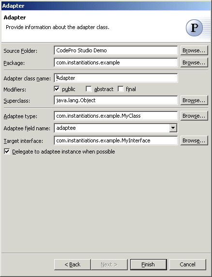

Adapter Pattern
Also known as: Wrapper
The
Adapter Pattern converts the interface of a class into another interface clients expect.
Adapter lets classes work together that couldn't otherwise because of incompatible
interfaces. Sometimes a toolkit class that's designed for reuse isn't reusable only
because its interface doesn't match the domain-specific interface an application requires.
Wizard
Applicability
Additional Resources

| Option |
Description |
Default |
| Source folder |
Enter a source folder for the new class. Either type a valid
source folder path or click Browse to select a source
folder via a dialog. |
The source folder of the element that was selected when the
wizard was started. |
| Package |
Enter a package to contain the new class. Either type a
valid package name or click Browse to select a package via
a dialog. |
The package of the element that was selected when the wizard
has been started. |
| Adapter class name |
Type a name for the new adapter class. |
<Adapter> |
| Modifiers |
Select one or more access modifiers for the new class.
- public (uncheck for default visibility)
- abstract
- final
|
public |
| Superclass |
Type or click Browse to
select a superclass for this class. |
<java.lang.Object> |
| Adaptee type |
Type or click Browse to
select the class or interface to be adapted to the target interface |
The type or the primary type of the compilation unit that
was selected when the wizard was started |
| Adaptee field name |
Type or select the name of the field that will contain the
instance of the adapted class |
<adaptee> |
| Target interface |
Type or click Browse to
select the interface that the adaptee class will be adapted to |
<blank> |
| Delegate to adaptee instance when possible |
Determines whether the generated methods will delegate to
the adaptee instance |
<true> |
Use the Adapter pattern when
- you want to use an existing class, and its interface does not match the one you need.
- you want to create a reusable class that cooperates with unrelated or unforeseen
classes, that is, classes that don't necessarily have compatible interfaces.
- (object adapter only) you need to use several existing subclasses, but it's
impractical to adapt their interface by subclassing every one. An object adapter can adapt
the interface of its parent class.
http://c2.com/cgi/wiki?AdapterPattern
http://www.wikipedia.org/wiki/Adapter_pattern
http://www.cmcrossroads.com/bradapp/javapats.html#Adapter
http://www.dofactory.com/patterns/pattern_adapter.asp |